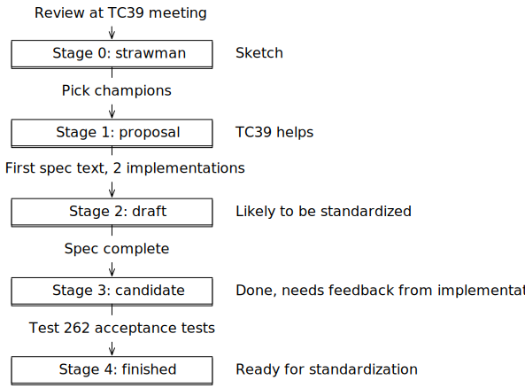

JavaScript was created in May 1995 in 10 days, by Brendan Eich. Eich worked at Netscape and implemented JavaScript for their web browser, Netscape Navigator.
The idea was that major interactive parts of the client-side web were to be implemented in Java. JavaScript was supposed to be a glue language for those parts and to also make HTML slightly more interactive. Given its role of assisting Java, JavaScript had to look like Java. That ruled out existing solutions such as Perl, Python, TCL, and others.
Initially, JavaScript’s name changed several times:
Its code name was Mocha.
In the Netscape Navigator 2.0 betas (September 1995), it was called LiveScript.
In Netscape Navigator 2.0 beta 3 (December 1995), it got its final name, JavaScript.
3.2 Standardizing JavaScript
There are two standards for JavaScript:
ECMA-262 is hosted by Ecma International. It is the primary standard.
ISO/IEC 16262 is hosted by the International Organization for Standardization (ISO) and the International Electrotechnical Commission (IEC). This is a secondary standard.
The language described by these standards is called ECMAScript, not JavaScript. A different name was chosen because Sun (now Oracle) had a trademark for the latter name. The “ECMA” in “ECMAScript” comes from the organization that hosts the primary standard.
The original name of that organization was ECMA, an acronym for European Computer Manufacturers Association. It was later changed to Ecma International (with “Ecma” being a proper name, not an acronym) because the organization’s activities had expanded beyond Europe. The initial all-caps acronym explains the spelling of ECMAScript.
In principle, JavaScript and ECMAScript mean the same thing. Sometimes the following distinction is made:
The term JavaScript refers to the language and its implementations.
The term ECMAScript refers to the language standard and language versions.
Therefore, ECMAScript 6 is a version of the language (its 6th edition).
3.3 Timeline of ECMAScript versions
This is a brief timeline of ECMAScript versions:
ECMAScript 1 (June 1997): First version of the standard.
ECMAScript 2 (June 1998): Small update to keep ECMA-262 in sync with the ISO standard.
ECMAScript 3 (December 1999): Adds many core features – “[…] regular expressions, better string handling, new control statements [do-while, switch], try/catch exception handling, […]”
ECMAScript 4 (abandoned in July 2008): Would have been a massive upgrade (with static typing, modules, namespaces, and more), but ended up being too ambitious and dividing the language’s stewards.
ECMAScript 5 (December 2009): Brought minor improvements – a few standard library features and strict mode.
ECMAScript 5.1 (June 2011): Another small update to keep Ecma and ISO standards in sync.
ECMAScript 6 (June 2015): A large update that fulfilled many of the promises of ECMAScript 4. This version is the first one whose official name – ECMAScript 2015 – is based on the year of publication.
ECMAScript 2016 (June 2016): First yearly release. The shorter release life cycle resulted in fewer new features compared to the large ES6.
ECMAScript 2017 (June 2017). Second yearly release.
Subsequent ECMAScript versions (ES2018, etc.) are always ratified in June.
3.4 Ecma Technical Committee 39 (TC39)
TC39 is the committee that evolves JavaScript. Its member are, strictly speaking, companies: Adobe, Apple, Facebook, Google, Microsoft, Mozilla, Opera, Twitter, and others. That is, companies that are usually fierce competitors are working together for the good of the language.
Every two months, TC39 has meetings that member-appointed delegates and invited experts attend. The minutes of those meetings are public in a GitHub repository.
3.5 The TC39 process
With ECMAScript 6, two issues with the release process used at that time became obvious:
If too much time passes between releases then features that are ready early, have to wait a long time until they can be released. And features that are ready late, risk being rushed to make the deadline.
Features were often designed long before they were implemented and used. Design deficiencies related to implementation and use were therefore discovered too late.
In response to these issues, TC39 instituted the new TC39 process:
ECMAScript features are designed independently and go through stages, starting at 0 (“strawman”), ending at 4 (“finished”).
Especially the later stages require prototype implementations and real-world testing, leading to feedback loops between designs and implementations.
ECMAScript versions are released once per year and include all features that have reached stage 4 prior to a release deadline.
The result: smaller, incremental releases, whose features have already been field-tested. Fig. 1 illustrates the TC39 process.
Figure 1: Each ECMAScript feature proposal goes through stages that are numbered from 0 to 4. Champions are TC39 members that support the authors of a feature. Test 262 is a suite of tests that checks JavaScript engines for compliance with the language specification.
ES2016 was the first ECMAScript version that was designed according to the TC39 process.
3.5.1 Tip: Think in individual features and stages, not ECMAScript versions
Up to and including ES6, it was most common to think about JavaScript in terms of ECMAScript versions – for example, “Does this browser support ES6 yet?”
Starting with ES2016, it’s better to think in individual features: once a feature reaches stage 4, you can safely use it (if it’s supported by the JavaScript engines you are targeting). You don’t have to wait until the next ECMAScript release.
3.6 FAQ: TC39 process
3.6.1 How is [my favorite proposed feature] doing?
3.6.2 Is there an official list of ECMAScript features?
Yes, the TC39 repo lists finished proposals and mentions in which ECMAScript versions they were introduced.
3.7 Evolving JavaScript: Don’t break the web
One idea that occasionally comes up is to clean up JavaScript by removing old features and quirks. While the appeal of that idea is obvious, it has significant downsides.
Let’s assume we create a new version of JavaScript that is not backward compatible and fix all of its flaws. As a result, we’d encounter the following problems:
JavaScript engines become bloated: they need to support both the old and the new version. The same is true for tools such as IDEs and build tools.
Programmers need to know, and be continually conscious of, the differences between the versions.
You can either migrate all of an existing code base to the new version (which can be a lot of work). Or you can mix versions and refactoring becomes harder because you can’t move code between versions without changing it.
You somehow have to specify per piece of code – be it a file or code embedded in a web page – what version it is written in. Every conceivable solution has pros and cons. For example, strict mode is a slightly cleaner version of ES5. One of the reasons why it wasn’t as popular as it should have been: it was a hassle to opt in via a directive at the beginning of a file or a function.
So what is the solution? Can we have our cake and eat it? The approach that was chosen for ES6 is called “One JavaScript”:
New versions are always completely backward compatible (but there may occasionally be minor, hardly noticeable clean-ups).
Old features aren’t removed or fixed. Instead, better versions of them are introduced. One example is declaring variables via let – which is an improved version of var.
If aspects of the language are changed, it is done inside new syntactic constructs. That is, you opt in implicitly. For example, yield is only a keyword inside generators (which were introduced in ES6). And all code inside modules and classes (both introduced in ES6) is implicitly in strict mode.